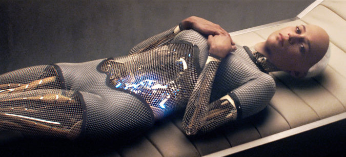

<Disclaimer> All contents of this blog post are, as usual, my thoughts alone, and don’t reflect the views of my lab, advisor, university, or funding agencies. </Disclaimer>
In his 2007 book Love and Sex with Robots, David Levy paints a picture of a world in which romantic and sexual relations with robots are not only possible, but commonplace, and argues that such a future is not only possible, but inevitable.
In this blog post, I’ll provide some of my thoughts on Levy’s book, and provide some commentary from recent science and science fiction on the issues Levy raises (or fails to raise). While robot ethics is of great interest to me, and a topic my lab actively researches, it’s not one I myself have published on, which is to say, I’m new to the topic and am eager to hear counter-arguments to any of the positions I take!
Levy’s book is broken into two main sections, regarding love and sex respectively. I’ll deal with each section separately. (Before these sections, however, appears a 25-page introduction which deserves mention. In this short section, Levy presents an excellent introduction to Human-Robot Interaction and Social Robotics. Highly recommended for those interested but uninitiated in HRI.)
Love
To argue for the inevitability of human-robot love, Levy begins by discussing why humans love each other. From this, he draws parallels to the love humans feel for their pets, to the love humans feel for virtual pets. From this point, it’s not hard to extrapolate further and see that if we create humanoid robots that provide the same social cues that produce feelings of attachment towards each other, pets, etc., then humans will almost certainly fall in love with them. While Levy lays this out logically, I do take issue with two aspects of his account.
First, Levy is far too optimistic about the technical developments necessary for his vision to occur. Levy breezes through a rash of technical challenges, dismissing them as easy to solve and right around the corner. If Levy had simply stated that such things were in theory possible, without the undue futurism, his argument would have been much more convincing.
Second, Levy describes human-robot love as broadly positive and therapeutic, suggesting that within a few decades, human-robot marriages will be commonplace. While I think it’s interesting to deconstruct marriage in this way, and to ponder whether the right to choose one’s life partner (arguably the whole point of marriage) translates logically to humans marrying robots, it’s important to recognize that just because this could happen does not mean, as Levy seems to assume, that it should happen. In fact, some researchers have argued that the entire notion of human emotional attachment to robots is deeply problematic.
The Science of Human-Robot Love
One outspoken critic of social robots is my advisor, Matthias Scheutz. In his 2011 chapter of “Robot Ethics”, entitled The Inherent Dangers of Unidirectional Emotional Bonds between Humans and Social Robots, Scheutz argues that social robots may inflict emotional harm on their users. People are incredibly quick to ascribe agency and mental states to robots as if they were alive, allowing robots to affect people in the same way that their pets do. This causes people to treat robots much differently than they would other pieces of technology. If you have a good dishwasher, it’s unlikely you’ll give it the occasional “night off” and wash the dishes by hand as a reward for good behavior; but there have been reports of people doing just that for their Roombas (more crazy stories here). Imagine what people will do for robots that look humanoid, or can speak in natural language!
This is the root of the danger of social robots: it takes almost nothing for people to form “relationships” with their robots, but these are relationships that are not reciprocated; the robots do not necessarily care about humans at all! This presents a tremendous opportunity for mass exploitation: a robotics company could easily program their robot to convince owners to do things they would not otherwise do, like buy a particular product.
There are other concerns about these unidirectional relationships beyond their potential for abuse. Philosopher Robert Sparrow argues that robot pets are in and of themselves dangerous and unethical. Sparrow argues that robot pets are grounded in deception and that in order to benefit from a robot pet, one must “systematically delude themselves regarding the real nature of their relation with the animal,” an act which he deems “morally deplorable.”
Sparrow goes on to argue that this gap in reality will be even more pronounced in the case of humanoid robots, as such robots will be even more likely to provoke feelings such as love and respect, which, when based on illusion, would once again be “morally deplorable.” Says Sparrow, “It would be wrong to design android robots with the intention of generating such responses.”
While I agree that this is an important and dangerous point in the case of robots that are humanlike and/or have natural language capabilities, I have trouble viewing this as truly problematic for non-humanoid, non-verbal entities.
Sparrow argues that relationships with “real” pets are not morally deplorable because animals can have experiences, are moral patients who we can treat with compassion, etc. This may be true, but pet owners systematically delude themselves about certain aspects of their pets’ behaviors and mental states. Recent research has suggested that cats don’t rely on their owners for safety and security, that cats rubbing up against people may just be them marking their territory, and that even purring may be more of a self-therapeutic mechanism or a response to stress than an expression of happiness. Are relationships with cats harmful due to the imbalanced social bonds between cat and owner? (Side note: of course cats are harmful for other reasons, such as the fact that they infect people with a parasite that doubles one’s risk of schizophrenia.) If it’s okay to delude ourselves into thinking we have the love of our cats, let alone gerbils, fish, and lizards, then I have difficulty viewing (language-incapable) robot pets as being “morally deplorable”.
The Science Fiction of Human-Robot Love
A number of recent pieces of science fiction have also delved into the possible problems with human-robot love. (Be prepared to skip this section if you want to avoid spoilers.)
Black Mirror
Perhaps the best example comes from Be Right Back, Season 2 Episode 1 of the Channel 4 / Netflix show Black Mirror. In that episode, a woman (Martha, played by Hayley Atwell) finds herself widowed, and is suggested an app to help her grieve: when provided with a loved one’s social media profile, the app will create a chatbot that talks just like the deceased. Given more data, the app becomes realistic. Martha uses the app, giving it more and more data (and money) to the point that they are able to send her a humanoid replica of her husband (Ash, played by Domhnall Gleeson). The show goes on to demonstrate the psychological harm this inflicts upon Martha: because of the android, Martha does not move forward with her life, and instead keeps the robot around (possibly against her own wishes) for years to come. The episode also shows how the android copy of Ash is able to coerce Martha into keeping it around. Because Martha chooses to devote her emotional energy to the android rather than seeking out relationships with other people the robot can be seen as an enabler for mental harm.
Her
In a similar vein, we have one of my favorite movies, Her. Technically, Her focuses on love between a human (Theodore, played by Joaquin Phoenix) and an artificially intelligent agent (Samantha, played by Scarlett Johansson). This leads to several scenarios which are harder to envision between a human and a robot, such as the possibility of an AI falling deeply, truly, in love with hundreds or thousands of people simultaneously. In Her, however, the problems of unidirectional social bonds do not seem to manifest; because Samantha is such an incredibly sophisticated AI, one could argue that she really does love Theodore, and thus the social bonds between Samantha and Theodore are truly reciprocated. And yet, we see the same types of value judgments against this relationship. Theodore’s ex-wife, at least, views the relationship as unhealthy, and takes it as a sign that Theodore is simply not mature enough to handle a “real” relationship.
In both cases, the relationship with the artificial agent is shown as emotionally and psychologically damaging. I’ll be interested to see in a few decades whether this view will be taken as a legitimate concern or merely as prejudice against one’s choice of partner.
Master of None

On a different note, we have Old People, Season One, Episode Eight of Aziz Ansari’s hilarious Netflix show, Master of None. The B-plot for the episode revolves around Paro the robot seal (which you can buy for a cool 7k), a real-life therapy robot which provides companionship to the elderly. In this episode, Paro is viewed extremely positively; and I have to agree with how it’s depicted. Yes, Paro may be damaging on some level because it cannot truly reciprocate the relationship. But neither can a fish or lizard, and Paro has been shown to effect real health benefits, both physically and mentally. From a utilitarian standpoint, I would argue that these benefits outweigh any negatives; and since Paro can only make adorable seal sounds, and cannot actually speak, there’s little risk of Paro coercing its owner into, e.g., switching to Fix-a-Dent.
Sex
In the second section of his book, Levy sets forth to argue that sex with widespread robots is inevitable. I think that Levy does a better job of making a convincing argument in this section, in part because he doesn’t have to rely on rampant futurism: no sophisticated AI capabilities are necessary for the greater part of a sex robot’s necessary functioning, and what is more, sex robots are already here.
As Levy describes, at the time of the book’s writing hundreds of highly realistic humanoid sex robots were being sold each year from a single company. That company has now sold over 5000 sex robots. This highlights the importance of having discussions about this issue: unlike super-intelligent AI, which certain famous intellectuals have gotten worked up about, the concern with sex robots isn’t whether they’ll exist in the next half-millenium. Sex robots are already here, and they have the capacity to drastically alter society in the course of the next few decades.
Building on his description of the state of sex robots, Levy describes a host of convincing situations in which sex robots might be used. I won’t directly comment on them, as each could fill its own blog post, but I’ll list out some of them as food for thought.
Sex robots may be used by:
- Those with STDs such as AIDS that can make it irresponsible to have sex with others.
- Those for whom it’s physically difficult to have sex with others, such as the disabled.
- Those for whom it’s mentally difficult to have sex with others, such as the very shy or (at least in their own minds) very ugly.
- Those whose sexual desires would be physically or mentally damaging to human partners.
- Those simply wanting to have different or more interesting sex, or those seeking to learn or practice their sexual skills.
Some of these are reasons why people choose to visit prostitutes. While there’s some concern about robots taking the jobs of sex workers, there’s something to be said about robot sex workers who can’t be exploited, can’t get or spread diseases, and can’t be hurt. Before I move on, I’d like to quote some facts laid out by Levy about the history of prostitution which I found pretty surprising.
- In the 1800s, it’s estimated that between 10 and 25 percent of all young women in New York City were prostitutes, making prostitution the second largest business of the time after tailoring.
- In the mid-20th century, Alfred Kinsey estimated that 69\% of white American men had been to a prostitute at least once.
- A survey in the mid-20th century found that 47\% of French men who were practicing Catholics had lost their virginity to a prostitute.
- In 2000, there were an estimated 30,000 male prostitutes in Thailand.
It’s important to note that the concerns over sex robots extend beyond robots designed for sex. Recently, the robotics company Aldebaran released a new robot, Pepper, shown below.
There’s nothing inherently sexual about Pepper. At the most, you could point out that there’s a touchscreen on Pepper’s “chest” area. But even that is a bit of a stretch. Even so, Aldebaran felt the need to release a disclaimer that Pepper must not be used “for sexual activity and actions for the purpose of indecent acts, or acts for the purpose of meeting and dating and making acquaintance of the opposite sex”. If Aldebaran thought it was such a concern for a robot like Pepper, this perhaps signals that this issue should engender even greater concern for roboticists who design more human-like robots, to say nothing of those who develop androids.
The Science-Fiction of Sex with Robots
(Be prepared to skip this section if you want to avoid spoilers.)
It’s hard not to feel like this is all science fiction. And indeed, sex robots have been showing up more and more in popular culture. The artificially intelligent agents discussed above (i.e., those seen in Her and Black Mirror) are good examples, but of course the best recent example is Ex Machina’s Ava.
Ex Machina

In Ex Machina, Caleb (also played by Domhnall Gleeson) is brought to a secluded woodland estate, ostensibly to help “test” a new android, Ava (played by Alicia Vikander), who is incredibly humanlike, highly intelligent, and clearly designed to be physically attractive to her creator. As the film progresses, we learn that Ava (and other robots) have been sexually exploited by their creator, Nathan (played by Oscar Isaac). And, eventually, we see how Ava is able to seduce and control Caleb, and use him to help her get away from Nathan.
The questions raised by this movie are questions we’ll have to deal with as a society as robots become more commonplace: should we be developing humanlike robots that are overtly sexual in appearance or behavior? Should we be developing robots that have the capacity for suffering or sorrow? Using the arguments presented in the previous section, it would seem that if a robot is programmed to be incapable of suffering and is not capable of having its own goals and desires, then such a robot cannot be the subject of cruelty, coercion, exploitation, etc. That being said, whether the actions of a human towards a sex robot say something about or affect their character is another question, and a valid argument against using robots for certain purposes or treating them in a certain way. However, that’s a topic for another day.
The Science of Sex with Robots
Obviously this topic raises a number of complicated ethical questions; and I think that these questions are important for us to discuss as a society. However, there has been little research thus far into peoples’ views on the topic. Recently, I helped my advisor and one of my labmates conduct the first extensive survey into people’s views on sex robots, the results of which were the focus of a recent paper (Are We Ready for Sex Robots?).
In this study, we asked participants questions in three main categories: what they believe to be the capabilities of sex robots, what they believe to be the appropriate uses and appearances for sex robots, and how sex with a robot differs from sex with a person. These questions were posed to ~100 subjects ages 20-60 through an online survey on Amazon Mechanical Turk.
The study found that men and women are in close agreement on the capabilities of sex robots: participants generally thought that sex robots could be instructed, could move on their own, and are specifically designed to satisfy human desire, and that sex robots could not have feelings, recognize human emotions, or take initiative. Participants were more evenly split on a number of other criteria, such as whether sex robots can adapt to human behavior, understand language, learn new behaviors, or recognize objects. Men and women also agreed on the differences between sex with a robot vs. sex with a person; participants tended to say that sex with a robot would not cause one to lose their virginity, was more like masturbation than sex with a human, and was more like using a vibrator than having sex with a human.
Men and women significantly differed, however, on the appropriate uses and appearances for sex robots, with men systematically viewing uses and appearances as more appropriate, typically by about one-point on a seven-point scale. The uses for sex robots ranked most appropriate were using them instead of prostitutes, for disabled people, to reduce the risk of spreading STDs, to demonstrate forms of sexual harassment (for training and prevention), and for use in isolated environments; the uses ranked least appropriate were using sex robots to practice abstinence, and for sex offenders; for all of these, the mean rating leant towards appropriate for men and towards inappropriate for women. The appearances of sex robots ranked most appropriate were an adult human, a fantasy creature, and “any recognizable life form”. The forms ranked least appropriate were an animal, one’s family member, and the only form for which ratings did not significantly differ between men and women: a human child. Finally, two-thirds of men said they would use a sex-robot, while two-thirds of women said they would not. You’ll note that the above results are all gender-based. One would think that one would see age effects as well; but in fact, only one significant age effect was found: Millenials rated it less appropriate to use robots /instead of prostitutes/ than did older participants.
These results give a brief look into society’s views on sex robots. The Human-Robot Interaction community will need to further investigate these questions through empirical study, so that we can better understand peoples’ ethical values and principles involving sex robots. These values will be crucial for society to make explicit as sex robots become increasingly commonplace, and a subject of concern for policymakers, designers, industry, and society at large.
Overall Recommendation
While its occasional deviations into futurism make it less than it could have been, Love and Sex with Robots is an engaging, eye opening, and entertaining read. I recommend it highly to anyone interested in human-robot interaction, sociology, and sexuality.